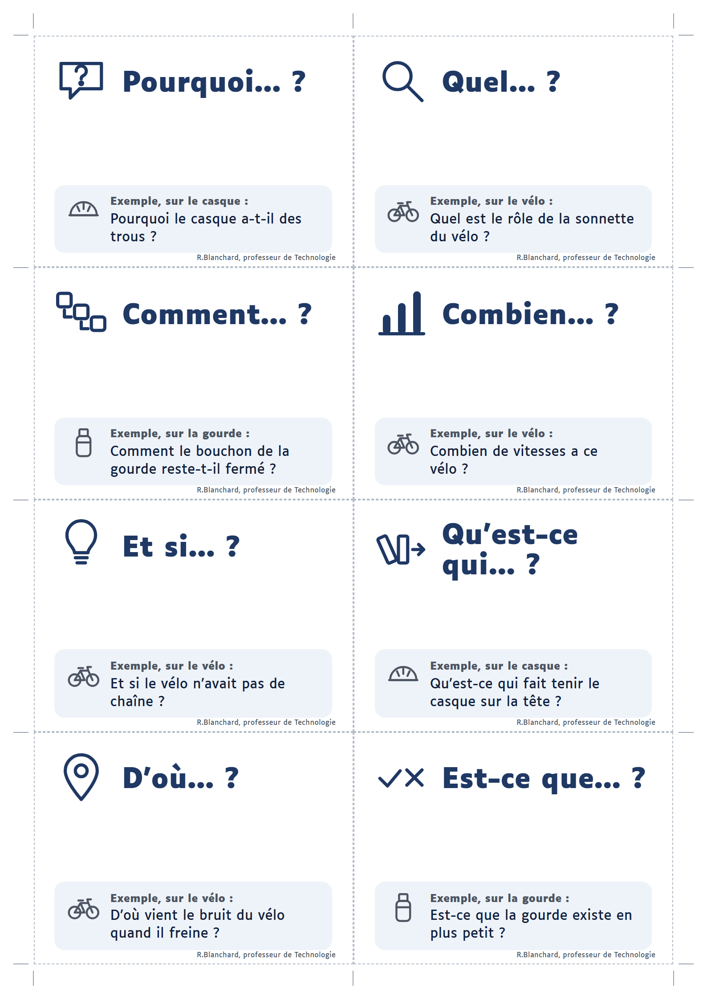
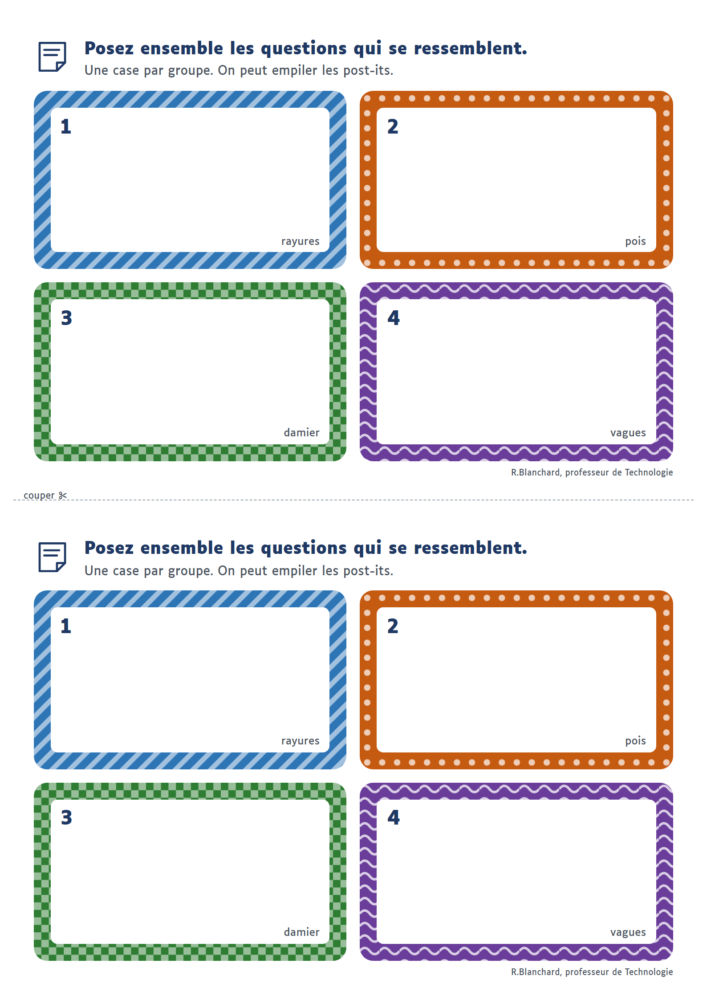
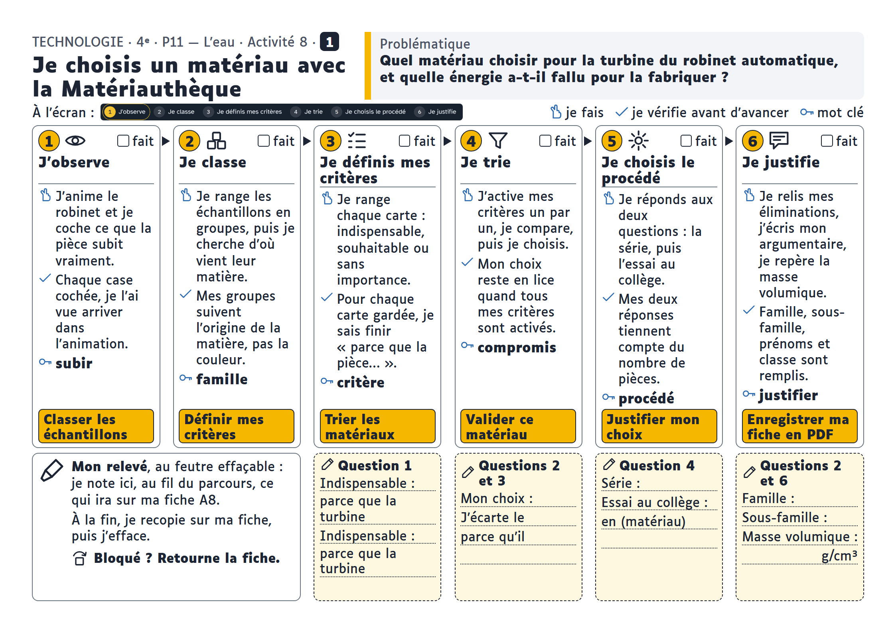

| Prévu | Moment | Étapes |
|---|---|---|
| 0:00 | La lettre du fabricant | |
| 1:00 | Les turbines passent de main en main | |
| 1:30 | Le pari, puis la démonstration | |
| 2:00 | Le jeu des questions (3 min) | |
| 5:00 | Le tri au tableau (3 min) | |
| 7:00 | Les 4 familles, relances si besoin | |
| 8:00 | La problématique | |
| 9:00 | Photo du tableau, saisie des questions | |
| 10:00 | La capsule de méthode | |
| 14:00 | Fiche élève, fiche repère, rôles | |
| 16:00 | Partie A · Matériauthèque (20 min) | |
| 36:00 | Partie B · mini-tableur (10 min) | |
| 46:00 | Bilan : vos questions |
Avant la classe
Tester le débit (fiche « fabrication et test ») et repérer la manette au ruban. Tracer 4 cadres vierges numérotés 1 à 4 au tableau, sans titre. Aimanter les 4 étiquettes et la problématique face contre le tableau. Ouvrir declencheur.html#1 en plein écran (F). Poser les cartes d'amorce (1 jeu par binôme) et les post-its.
Documents
Déroulé (2 p.) · Lettre · Lettre facile à lire · Cartes d'amorce · Cartes adaptées · Plateau A5 · Étiquettes du tableau · Relances et sachet · Relevé · Fiche repère · Turbines : fabrication et test
Réglages
L'horloge démarre à la première page de la lettre.
Bonjour à toute la classe,
Nous fabriquons le robinet automatique que vous connaissez bien. Nous avons un problème, et nous avons besoin de vous.
Des clients se plaignent : quand on ouvre juste un petit filet d'eau, le robinet ne s'allume pas.
- Nous fabriquons des robinets automatiques.
- Avec un petit filet d'eau, le robinet ne s'allume pas.
La turbine que nous utilisons aujourd'hui nous coûte cher. Et nous devons en fabriquer beaucoup, pour beaucoup de robinets.
Nous vous confions deux turbines d'essai, A et B. Observez-les, puis faites-les tourner.
- La turbine nous coûte cher.
- Nous devons fabriquer beaucoup de turbines.
- Voici deux turbines : A et B.
Avant de décider quoi que ce soit, nous voulons vos questions. Toutes vos questions !
Merci d'avance pour votre aide.
Le bureau d'études de Fontelame
- Aidez-nous : posez-nous vos questions.
Turbine A ou turbine B ?
Faites-les passer de main en main. Observez.
Pariez : laquelle va tourner sous un petit filet d'eau ? Levez la main : A… ou B ?
Regardez… et écoutez.


Des post-its :
une question par post-it
- Le plus de questions possible.
- On n'y répond pas.
- Une question par post-it.
- Écrire, dire à son binôme, ou dessiner. Les cartes vous aident.
Pilote : écrit · Copilote : propose. Changez de rôle !
Collez vos post-its au tableau.
Rassemblez les questions qui se ressemblent.
Une capsule de 8 écrans : ce que vous allez produire, et comment vous y prendre.
Ouvrir la capsule de méthodeElle s'ouvre dans un nouvel onglet. Revenez ici à la fin.
La fiche élève A8, et la fiche repère à côté de l'écran.
- Pilote : tient la souris.
- Vérificateur : lit la fiche repère, vérifie chaque étape.
- On échange à mi-parcours.

- Deux critères, justifiés
- Mon choix : matériau, famille, sous-famille
- Une élimination expliquée
- Deux procédés : 10 000 turbines, une turbine d'essai au collège
Questions 1 à 4 de la fiche. Changez de rôle !
- La bonne définition, à cocher
- Masse et énergie grise, avec les unités
- « Combien de fois plus ? », puis l'explication
Notre problématique : Quel matériau choisir pour la turbine du robinet automatique, et quelle énergie a-t-il fallu pour la fabriquer ?